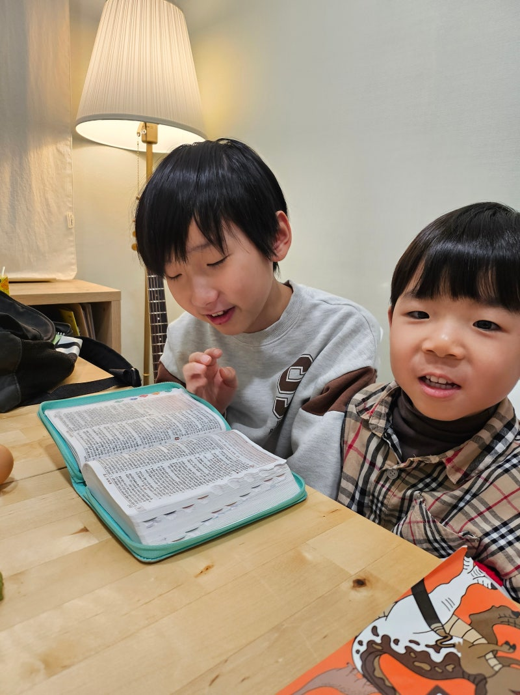
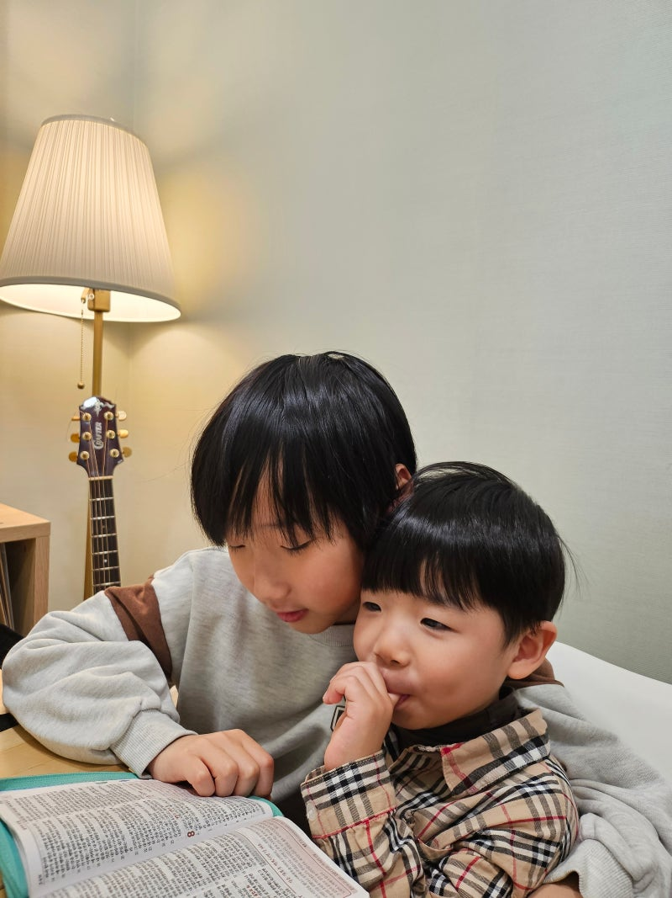
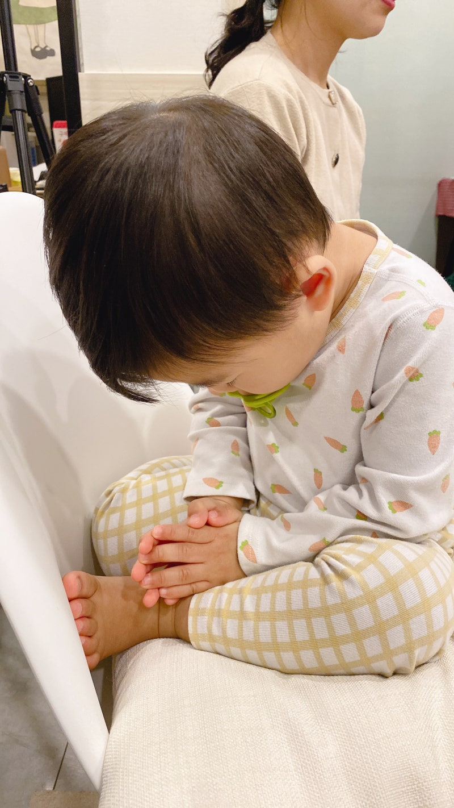

기도했는데, 왜 아무것도 안 바뀐 것 같지? 여러분 기도해본 적 있을거에요? 간절하게, 진짜로. 시험 전날 밤이든, 관계가 무너지던 순간이든, 아무것도 안 풀리던 그 시기든. 그런데 아무것도 안 바뀌었던 경험.아마 한 번쯤은 있을 거예요.

그래서 이런 생각이 들었을 수도 있습니다. "기도가 진짜 되는 건가?""내가 잘못 한 건가?""아니면 원래 이런 건가?" 우리가 기도를 배운 방식대부분의 사람들은 기도를 이렇게 배웠습니다. 원하는 걸 말하면 된다. 눈 감고, 손 모으고, 하고 싶은 말 하고, 아멘. 그러니까 기도는 자연스럽게 소원을 말하는 시간이 됐어요. 취업되게 해주세요.건강하게 해주세요.이 사람이랑 잘 되게 해주세요.

그런데 생각해보면 이건 거의 소원 목록 제출에 가깝지 않나요? 그리고 그 소원이 이루어지지 않으면 기도가 실패한 것처럼 느껴지고. 그런데 진짜 문제는 따로 있습니다.기도 응답이 안 된 것이 문제가 아닐 수 있어요. 기도를 처음부터 잘못 이해하고 있었던 게 문제일 수 있습니다. 이렇게 생각해볼게요. 친한 친구한테 연락하는 상황.두 가지 경우가 있어요.

경우 1.필요할 때만 연락해요.부탁이 있을 때, 도움이 필요할 때.해결되면 연락 끊어요. 경우 2.그냥 같이 있고 싶어서 연락해요.힘든 것도 나누고, 기쁜 것도 나누고.딱히 목적 없이 그냥 대화해요. 어느 쪽이 진짜 친구 관계인지말 안 해도 알죠. 기도도 똑같아요. 기도는 소원 말하기가 아닙니다.기도는 원래관계 안에서 나누는 대화입니다.
예수님이 기도를 가르쳐줄 때 제일 먼저 한 말이 뭔지 아시나요? "하늘에 계신 우리 아버지여" (마태복음 6:9) 원하는 것 목록이 아니었어요.관계의 확인이었어요. 기도의 시작은 요청이 아니라"나는 지금 아버지 앞에 있다"는 인식입니다. 그래서 기도는 완료형이 아닙니다.여기서 언어 얘기를 잠깐 해볼게요. 우리는 보통 이렇게 말해요. "기도했어." 이 말이 뭔가 이상하게 느껴지지 않나요? 기도했어. 끝.마치 할 일 목록에서 체크하는 것처럼.

기도했으니까 이제 됐다.기도했으니까 하나님이 알아서 하시겠지.기도했으니까 나는 아무것도 안 해도 되겠지. 그런데 이건 기도가 아닙니다.기도를 핑계로 삶을 방치하는 것입니다. 반대로 이런 경우도 있어요. 기도는 했는데 결국 내가 다 해야 한다는 압박에서 벗어나지 못하는 것.기도가 그냥 시작 전 의식처럼 되어버린 것. 둘 다 기도를 완료된 하나의 행위로 보는 거예요. "기도하는 자세로"영어에 prayerfully 라는 단어가 있어요.
직역하면 "기도하는 자세로". 이게 훨씬 정확한 표현입니다. 기도했다 ← 완료, 끝난 것기도하는 자세로 ← 진행 중, 계속되는 것 성경에 이런 말이 있어요. "쉬지 말고 기도하라" (데살로니가전서 5:17) 24시간 무릎 꿇고 있으라는 말이 아닙니다. 삶의 모든 순간을 하나님을 향한 자세로 살아가라는 거예요. 취업 준비를 하면서도 기도하는 자세로.관계가 힘들 때 기도하는 자세로.결정을 내려야 할 때 기도하는 자세로. 기도가 삶의 특정 순간에 하는 종교적 행위가 아니라삶 전체에 스며있는 방향이 되는 거예요.
의지한다는 게 아무것도 안 한다는 뜻이 아닙니다.여기서 오해하면 안 되는 게 있어요. 기도하는 자세로 산다는 것이하나님께 다 맡기고 나는 손 놓는다는 뜻이 아니에요. 성경에 다윗이라는 사람이 나옵니다.다윗은 골리앗이라는 거대한 적 앞에 섰을 때이렇게 말해요. "나는 만군의 여호와의 이름으로 네게 나아가노라" (사무엘상 17:45) 두 가지를 동시에 했어요. 하나님을 의지했어요.그리고 앞으로 나아갔어요. 의지했기 때문에 멈춘 게 아닙니다.의지했기 때문에 더 담대하게 움직인 것입니다.

기도하는 자세란... 혼자 다 감당해야 한다는 압박에서 벗어나면서동시에 지혜롭고 담대하게 나아가는 것.결국 기도는 이런 거예요기도는 소원 목록 제출이 아니라, 하나님과의 관계 안에서 그분을 향해 살아가는 삶 전체의 자세입니다. "기도했어"가 아니라"기도하는 자세로 살고 있어" 가 되는 것. 이것이 바뀌면기도 응답이 없어도 무너지지 않을 것입니다.혼자 다 해야 한다는 압박에서도 자유로워 질거에요.그리고 역설적으로 더 담대하게 움직이게 될 것입니다. 기도를 많이 하는 것보다기도를 제대로 이해하는 게 먼저라고 생각됩니다. 개념이 바뀌면, 삶이 바뀌거든요. 빌드업 교회 | 빌드업 메시지 - 빌드업 교회를 소개합니다 우리는 매일 수많은 선택과 마주합니다.일, 관계, 미래.어떻게 살아야 하는지 아무도 제대로 가르쳐주지 않았던 것들. 빌드업 교회는 그 질문 앞에 함께 섭니다. 말씀을 통해 하나님이 누구이신지 알아가고,그분의 백성으로 오늘을 살아가는 방법을 함께 배워갑니다. 거창한 구호가 아니라,실제 삶에서 작동하는 신앙. 그것을 함께 세워가는 곳,빌드업 교회입니다. 말씀으로 세워지는 사람들 | 빌드업 교회 #빌드업교회 #빌드업메시지 #buildup #기도 #기도하는자세 #기도의의미 #기도란무엇인가 #크리스천 #청년크리스천 #2030크리스천 #신앙생활 #신앙고민 #신앙성장 #영적성장 #크리스천에세이 #크리스천일상 #하나님과동행 #일상기도 #믿음 #하나님